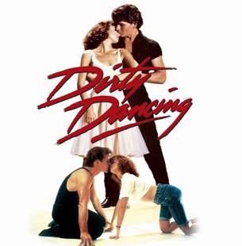
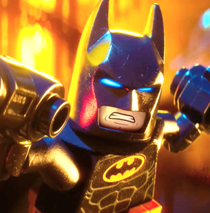
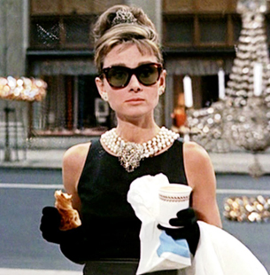
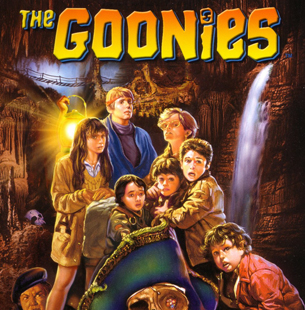
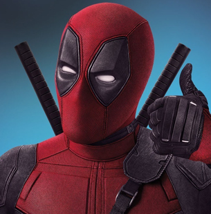
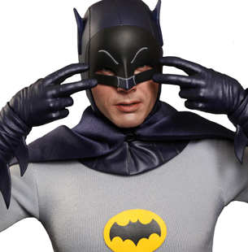
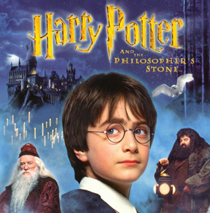

Safety Last! (U)
Safety Last! (U)
The comic genius of silent movie star Harold Lloyd never fades. Standing alongside Keaton and Chaplin as one of cinema’s finest physical comedians, his crowning glory is undoubtedly his 1923 film Safety Last!, featuring the infamous stunt where Lloyd ends up hanging from a gigantic clock face.
Lloyd stars in Safety Last! as a country bumpkin who makes his way to the big city, but finds that making money to support himself and his girlfriend (Mildred Davis) is no easy feat. When he hears that a department store owner is offering a cash prize to anybody who can help drum up business for his store, he hatches a plan with his daredevil friend that leads to a hair-raising stunt.
The infamous scene might have involved trick photography, but there was real danger involved for Lloyd, not least because a previous accident on set had left his right hand missing a thumb and index finger.
Showing on the main stage at Flickerama, this is a rare chance to enjoy one of cinema’s earliest achievements on a suitably grand stage.
 Labyrinth Masquerade Ball (U)
Labyrinth Masquerade Ball (U)
Join us for a night of mystery and wonder as Flickerama hosts a very special Masquerade Ball alongside a screening of Jim Henson’s 1986 cult favourite Labyrinth.
Frustrated with babysitting on yet another weekend evening, Sarah (Jennifer Connelly), a teenager with an active imagination, inadvertently summons goblins to take her baby stepbrother away. When little Toby actually disappears, Sarah must follow him into a fantastical world to rescue him from the Goblin King (David Bowie). Guarding his castle is the labyrinth itself, a twisted maze of deception, populated with outrageous characters and unknown dangers. Sarah must get through it in time to save Toby, or the Goblin King will keep him there forever…
Featuring a whole host of Henson puppets both loveable and enjoyably creepy, Labyrinth holds a special place in the hearts of millions of people, and this very special evening will celebrate one of the finest fantasy films to ever come out of Hollywood.
The screening takes place in one of Flickerama’s indoor pavilions and will be followed by a masquerade ball based on the eccentric party Sarah and the Goblin King attend in the film, complete with themed cocktails and a sumptuous meal. So don your finest evening wear, raise a Venetian mask and enter a world of fantasy...
 The Room (18)
The Room (18)
Made in 2003, The Room is a truly bizarre, genuinely hilarious relationship drama that has slowly and steadily become a bona fide cult classic thanks to a legion of fans who have come to love its bizarre plot, terrible acting and strange editing.
Director-writer-star Tommy Wiseau is the mad genius behind this jaw-droppingly weird movie, where subplots appear and disappear with no resolution, characters suffer intense mood swings in the space of seconds, and one character announces she has breast cancer and then never mentions it again.
Over the years, audience interaction has become a big part of The Room's eccentric appeal, as audience members don tuxedos, shout out lines and throw plastic spoons at the screen, all thoroughly encouraged for this late night Flickerama screening.
The Room is the Citizen Kane of bad movies, and just as memorable.
 Frozen Singalong (PG)
Frozen Singalong (PG)
Get those pipes working as we host a huge Frozen Singalong on our main stage. Sing along to an award winning score in an environment perfect for singing out loud and proud, with maybe even a graceful dance move or two thrown in for good measure.
Frozen is a stunning bigscreen comedy adventure that’s swiftly become one of the most popular Disney films ever made.
Fearless optimist Anna (voice of Kristen Bell) sets off on an epic journey – teaming up with rugged mountain man Kristoff (voice of Jonathan Groff) and his loyal reindeer Sven – to find her sister Elsa (voice of Idina Menzel), whose icy powers have trapped the kingdom of Arendelle in eternal winter.
Encountering Everest-like conditions, mystical trolls and a hilarious snowman named Olaf, Anna and Kristoff battle the elements in a race to save the kingdom.
Dirty Dancing (12A)
In 1963, 'Baby' Houseman (Jennifer Grey) is a 17-year-old spending the summer with her family at a resort hotel in the Catskills. Baby doesn't get along with her older sister and she's bored to tears by most of the older guests at the resort.
One night Baby is struck by handsome Johnny Castle (Patrick Swayze), a dancer in the resort's floor show, and falls head over heels in love. When Johnny's dance partner finds herself pregnant after a fling with one of the waiters, Baby volunteers to learn her steps and take her place. However, Baby's father (Jerry Orbach) will have none of it, convinced that Johnny is a low life and that his daughter is too young to understand her own feelings.
One of those special films which has slowly built a formidable legacy ever since its original release, Dirty Dancing has become a touchstone for an entire generation and is still weaving its hip-wiggling spell on younger audiences.
The LEGO Batman Movie (U)
In the irreverent spirit that made The Lego Movie a worldwide phenomenon, the self-described leading man of that ensemble – LEGO Batman (Will Arnett) – stars in his own big-screen adventure.
But there are big changes brewing in Gotham, and if he wants to save the city from The Joker’s (Zach Galifianakis) hostile takeover, Batman may have to drop the lone vigilante thing, try to work with others and maybe - just maybe - learn to lighten up.
Jokes come at you quicker than the Batmobile in this genius self-aware comedy, one which turns familiar Batman characters completely on their heads, not least the Caped Crusader himself. Undoubtedly the best Batman film in years.
Breakfast At Tiffany’s (PG)
Sophistication. Laughs. Romance. A cat. Breakfast At Tiffany’s has got it all, telling the warm-hearted story of two bohemians falling in love against a Manhattan backdrop.
When aspiring writer Paul Varjak (George Peppard) moves into his new apartment, he is both intrigued by and drawn to his unconventional neighbour Holly Golightly (Audrey Hepburn). A Givenchy-clad free spirit, Holly is a party girl whose intensely stylish façade masks an inner despair and a hidden past.
This indoor screening will be accompanied by the kind of classy cocktail party Holly Golightly herself would enjoy, forming the perfect backdrop for a true Hollywood classic, one which turned Audrey Hepburn into an international icon.
The Goonies (12A)
Steven Spielberg sprinkles his cinematic magic over Richard Donner’s adventure classic The Goonies, the story of brothers Mikey (Sean Astin) and Brandon Walsh (Josh Brolin), whose family is preparing to move because developers want to build a golf course in the place of their neighbourhood - unless enough money is raised to stop it.
When Mikey stumbles upon a map of the famed One-Eyed Willy's hidden fortune, Mikey, Brandon, and their friends Lawrence 'Chunk' Cohen, Clark 'Mouth' Devereaux, Andrea 'Andy' Carmichael, Stefanie 'Stef' Steinbrenner, and Richard 'Data' Wang set out on a quest to find the treasure.
Booby traps, pirate ships and buried treasure are the order of the day in The Goonies, a cult favourite that teaches life lessons without being preachy and offers up the kind of swashbuckling action that will keep both kids and adults enthralled.
Deadpool (15)
The superhero genre got a much needed kick in the behind with this anarchic comic book movie, a beautifully sarcastic riposte to all the clichés and conventions that years of Marvel and DC movies have created.
Based upon Marvel Comics’ most unconventional anti-hero, Deadpool tells the origin story of former Special Forces operative turned mercenary Wade Wilson (played by a never better Ryan Reynolds), who after being subjected to a rogue experiment that leaves him with accelerated healing powers, adopts the alter ego Deadpool. Armed with his new abilities and a twisted sense of humor, Deadpool hunts down the man who nearly destroyed his life.
The plot is really secondary to the wisecracks in Deadpool, a movie which smashes down the fourth wall and gleefully unleashes a few F-bombs in service to the film’s cynical attitude towards superheroes and even movies themselves.
Batman: The Movie (1966) (U)
Holy Adam West tribute! This year saw the passing of the great Adam West, the man who for many people is still the quintessential Batman. So it seems only right that our cult screen should pay tribute to the man by showing the feature length version of the 1960s Batman TV series which made West into a household name.
For their big screen adventure, Batman (West) and his youthful sidekick Robin (Burt Ward) must defend not just Gotham City but the world, as his four arch enemies - The Joker (Cesar Romero), the Penguin (Burgess Meredith), Catwoman (Lee Meriwether), and the Riddler (Frank Gorshin) -hold the planet to ransom with a dehydration machine which turns people to dust.
Pure camp and very funny with it, Batman: The Movie is unadulterated fun from start to finish, and proof positive that nobody can deliver a line quite like West could. Bam! Zap! Kapow!
Harry Potter & The Philosopher’s Stone (PG)
It’s been twenty years since the very first Harry Potter book was published, so the main event in our outdoor arena could only ever be one film – the very first Harry Potter movie, the beginning of a global franchise that taught millions of people what a Muggle is.
Harry Potter & The Philosopher’s Stone stars Daniel Radcliffe as Harry, an orphaned wizard-in-waiting enrolled at Hogwarts Academy – and, as his telltale forehead scar shows, destined for great things. Enter into the world of Hogwarts and experience the rich characters, lavish surroundings, wizardly tools and customs, the high-flying sport of Quidditch and much more beyond imagining.
With a young cast surrounded by such acting stalwarts as Maggie Smith, Alan Rickman and Robbie Coltrane, this really is a magical movie in both content and style, and our outdoor arena will have its very own wizard and goblin themed bars to satisfy all your thirst-quenching needs.